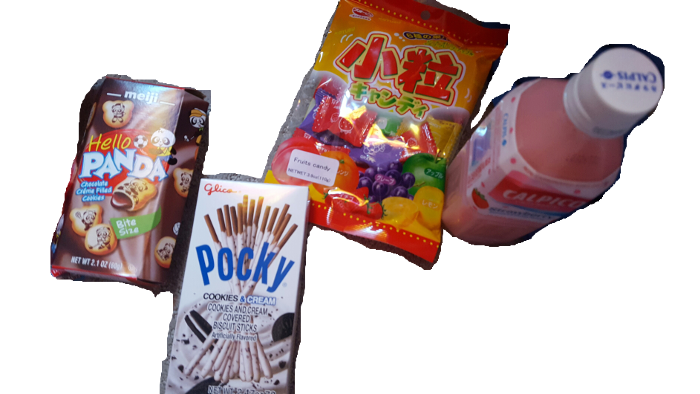

It's candy! a bunch of japanese treats
idk if you have some of this stuff in south carolina, but its all tasty anyway so yeah. no harm in including it if you ask me.

First, Hello Panda. Super cute and super delicious. They've got little pandas playing sports stamped on each cookie. :) it makes me smile.
Next, we have Pocky. you probably have seen this before, but maybe not in the Cookies & Cream flavor. My favorite flavor for almost anything. Oreos are just so addicting. Maybe even more addicting than cocaine. Enjoy your new addiction!
Then, the "Fruits Candy." I don't know exactly what they are--I've never tried them. I just got them because they looked super Japanese and thought they looked tasty. Lmk how those are!
Finally, the Calpico drink thing. Hopefully this doesnt explode in transit or something. that would be awful. Anyway, i hadnt ever had this until i bought it for you, I had only seen other people drinking it. I did get myself one though when i bought yours, and tried it out. The taste is pretty hard to explain. It's kinda tart and kinda yogurt-y, but it's marketed as a "non-carbonated soft drink." idk. taste it. if you dont like it you can throw it out or give it to your dog or something. jk dont give it to your dog. but yeah, i liked it, just dont drink it too fast, take it slow or it might upset your stomach. Also, i guess it doesnt need to be refrigerated bc it was just on a regular shelf in the store, but i would recommend drinking it cold if you can. yeah. that's it.
on to 𝒯𝒽ℯ ℱ𝓊𝓇𝓇𝓎 𝒪𝓃ℯ!
click here after opening 𝒯𝒽ℯ ℱ𝓊𝓇𝓇𝓎 𝒪𝓃ℯ.